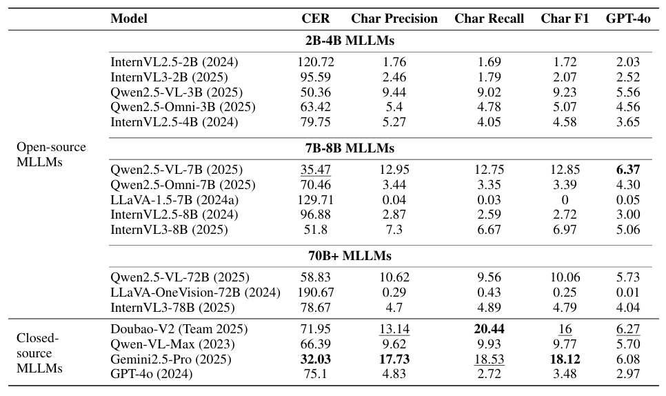
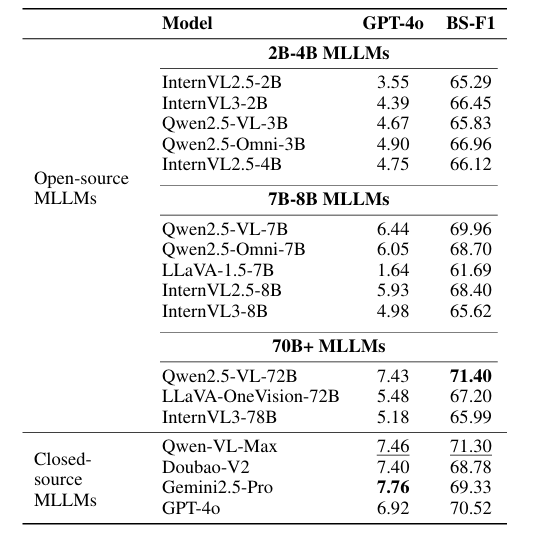

Benchmarking Vision-Language Models on Chinese Ancient Documents: From OCR to Knowledge Reasoning

摘要
中文古籍承载着跨越数千年的历史与文化知识，但传统数字化多停留在图像扫描层面，难以支撑知识挖掘与理解应用。现有文档基准以英文印刷或简体中文为主，无法全面评估 VLM 在古籍上的 OCR 与高阶理解能力。为此，我们构建 AncientDoc：面向中文古籍的首个系统化多任务基准，包含 整页 OCR、白话翻译、推理问答、知识问答、语言变体问答 五项任务，覆盖 14 类文献、100+ 本书、约 3,000 页图像。我们在多项指标上评测主流 VLM，并辅以与人类评分高度一致的 LLM（GPT-4o）打分作为补充，为古籍理解研究提供统一评测框架。
（内容依据你上传的论文草稿整理）
任务定义
1) Page-level OCR
不依赖检测/切分，直接从整页提取按阅读顺序排列的完整文本；挑战包括 竖排右读、夹注/小字 与 繁体/异体 的稳健识别。
2) Vernacular Translation
将古汉语转译为现代白话文；难点在于多义消歧与基于语义的断句/标点。
3) Reasoning-based QA
围绕隐含信息进行因果/语义/事实推理，检验多步推理与上下文理解。
4) Knowledge-based QA
回答与文本相关的客观知识问题（人名、地名、术语、史实等），考查古典知识储备与表达理解。
5) Linguistic Variant QA
识别与分析文体、修辞与时代风格特征，评估风格理解与生成能力。
与其它基准的任务覆盖对比
| Task | DocVQA | TKH | MTH | OCRBench | OCRBench v2 | AncientDoc |
|---|---|---|---|---|---|---|
| Page-level OCR | ✗ | ✓ | ✓ | ✓ | ✓ | ✓ |
| Vernacular Translation | ✗ | ✗ | ✗ | ✗ | ✗ | ✓ |
| Reasoning-based QA | ✓ | ✗ | ✗ | ✓ | ✓ | ✓ |
| Knowledge-based QA | ✗ | ✗ | ✗ | ✗ | ✗ | ✓ |
| Linguistic Variant QA | ✗ | ✗ | ✗ | ✗ | ✗ | ✓ |
数据集构建
来源：主要来自哈佛图书馆古籍数字资源，覆盖多个朝代与体裁；筛选优先级：竖排繁体、包含真实退化、语义密度高且便于标注。
- 覆盖 14 类古籍，100+ 本书，2,973–3,000 页。
- 朝代分布以明（1148页）与清（778页）为主，其次为宋（540）与唐（208）。
- 字体风格：正楷约 97%，草书约 3%。

评测指标
Page-level OCR
- CER（字符错误率）
- Char Precision / Recall / F1
其余四项任务
- CHRF++
- BERTScore (BS-F1)
- LLM 打分（0–10，最终选择与人类一致性最高的 GPT-4o）
LLM 打分与人类一致性（示意）
我们比较 GPT-4o、Gemini、Qwen-Plus、Doubao、Qwen2.5-72B 等评分与人工评分的一致性（Pearson、Spearman、Kendall、MSE、MAE、Bias），最终选取 GPT-4o 作为主评测 LLM。
实验结果（节选）
Page-level OCR
Gemini 2.5-Pro 在该任务上整体最佳（Char F1 ≈ 18.12，CER ≈ 32.03），Qwen2.5 系列表现稳定；小模型在 OCR 任务上有时优于超大模型。
 （对应论文 Table 3 的文字化总结示意）Vernacular Translation
Gemini 2.5-Pro 在 BERTScore 与 GPT-4o 打分上领先；Qwen-VL-Max / Qwen2.5-VL-72B 紧随其后。

Reasoning-based QA
Qwen2.5-VL-72B 取得最高 BERTScore；Qwen2.5-VL-7B 以较小规模接近大模型表现。
Knowledge-based QA
GPT-4o 在 BERTScore 上居首；Doubao-V2 与 Gemini 2.5-Pro 在 GPT-4o 打分上表现最佳。

Linguistic Variant QA
GPT-4o 与 Gemini 2.5-Pro 领先；值得注意的是 InternVL2.5 系列在本任务显著优于 InternVL3 系列。
BibTeX
@article{ancientdoc2025,
title = {Benchmarking Vision-Language Models on Chinese Ancient Documents: From OCR to Knowledge Reasoning},
author = {<填写作者列表>},
journal = {arXiv preprint arXiv:<填写ID>},
year = {2025}
}